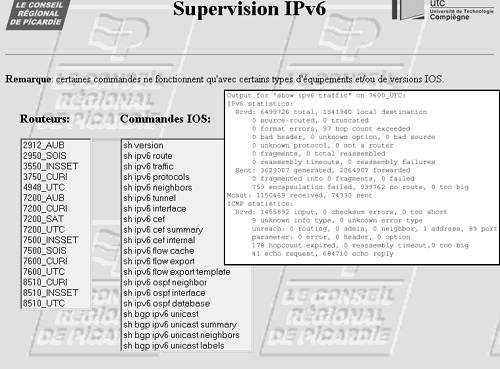

Retrieving Information from Routers and SwitchesYou can retrieve information from IPv6 devices in many ways, and they are the same as for IPv4:
SNMP and MIBsThe Simple Network Management Protocol (SNMP) is a request-reply-based protocol running over UDP (ports 161 and 162), although TCP operation is also possible. SNMP is used by the NMS to access or modify data in the managed devices via objects called Management Information Bases (MIBs). A MIB is a hierarchy of information that describes an SNMP-manageable object. Each object is associated with a unique object identifier descriptor (OID). The MIB is organized as a tree; the leafs are the object instances representing a resource (interface address, interface name, event, and so on). MIBs are either standard (described in RFCs) or enterprise specific. Given the relatively slow progress of IPv6 MIB definitions, a large number of enterprise-specific MIBs have been published, including several Cisco ones. SNMP is an asymmetric protocol, operating between a management station and an agent, the device being managed. Typically, the agent is a router or a switch that implements a few simple packet types and a generic get-or-set function on its MIB variables. The management station provides the user interface. Simple management stations can be built with UNIX command-line utilities. More complex (and expensive) ones collect MIB data over time and use graphical user interfaces (GUIs) to draw network maps. An SNMP operation takes the form of a protocol data unit (PDU). Version 1 SNMP supports five possible PDUs:
SNMP version 2 (SNMPv2) is an evolution of the SNMPv1. SNMPv2 introduces two new operations: GetBulk and Inform. The GetBulk operation is used to retrieve large blocks of data. The Inform operation allows two SNMP entities to exchange acknowledged information. SNMP version 3 (SNMPv3) adds security and remote-configuration capabilities. There are two distinct aspects for supporting IPv6 SNMP: the transport of SNMP protocol over IPv6 and the IPv6 MIBs support. SNMP over IPv6Because SNMP runs over UDP, an SNMP over IPv6 implementation is mostly about UDP over IPv6 support (and in the router case, some configuration tweaks). Cisco routers now support SNMP over IPv6. For SNMP GetRequest and SetRequest, which are initiated by the NMS, the router simply responds with the same transport protocol (UDP over IPv6, for instance) used by the incoming request. When sending an SNMP trap, the router needs to be configured with an IPv6 destination, as illustrated in the Example 10-1. Example 10-1. SNMP Configuration Example
On the NMS side, most SNMP application programming interfaces (APIs) support SNMP over IPv6:
Note Running SNMP over IPv6 is required only for IPv6-only devices. In the most common case, IPv6-managed devices are dual stack, and need to report management data for both IPv4 and IPv6. Historically, these devices have been configured for IPv4 first and have IPv4 connectivity to the NMS: Enabling of IPv6 can and should be done without disturbing the existing NMS/device transport and configuration. Because the transport (UDP) and the content (MIBs) are independent of each other, you can keep the IPv4 transport to carry SNMP IPv6 data. IPv6 MIBsMore than 100 MIBs are available to check for IPv6 support, and they can be classified as follows:
RFC 3796 provides a survey of IPv4 address usage in existing IETF documents, including many MIBs. Current IETF work is putting emphasis on MIB-2 MIBs (basic MIBs such as IP, UDP, TCP, ICMP) to support IPv6. Unfortunately, that work has been going on for quite a long time, because the initial approach of creating separate MIBs for IPv6 (with an ipv6Address) has evolved toward creating unified MIBs that cover both IPv4 and IPv6. Figure 10-2 illustrates that evolution. Figure 10-2. IPv6 Basic MIB HistoryTwo sets of basic MIBs are defined for supporting IPv6-related information. One set is based on RFC 2465 for textual convention of the IPv6 address (OCTET STRING [SIZE (16)]). The basic IPv6 MIBs supporting that textual convention are as follows:
The second set is based on RFC 3291 for textual convention of both IPv4 and IPv6, through an inetAddress structure, which includes a type (1 for IPv4, 2 for IPv6) and an address. These MIBs are sometimes referred to as unified MIBs. The basic IPv6 MIBs supporting that textual convention are as follows:
At the time of this writing, both the IP-MIB and the IP-FORWARD-MIB are in the IETF Editor Queue, as Proposed Standards, which means close to completion. Although some network equipment (Hitachi, NEC, Juniper) and NMS (HP-OV) vendors currently support IPv6-specific MIBs (based on RFC 2465), others, including Cisco routers, support some version of the unified MIBs (based on RFC 3291). Because the latter are not yet published RFCs, the support remains private, and based on various version of the Internet Draft. Cisco, for example, implemented the draft version for "IP Forwarding Table MIB" and "IP MIB" as a private MIB (update-00). However, because the unified MIBs are becoming standard, Cisco actively works on their support, and it is expected that the NMSs (HP-OV and so on) will integrate them. BGP and Other MIBsThe BGP IPv6 MIBs are lagging behind the needs of today's networks. The BGP multiprotocol extensions (MP-BGP) enable BGP to exchange routing information for different types of address families (for instance, IPv6), identified by an Address Family Identifier (AFI) and Subsequent Address Family Identifier (SAFI). RFC 1657 describes BGP4 MIBs, without the multiprotocol bits required to report information about IPv6 and VPNv6 (as well as VPNv4 and multicast). An update of RFC 1657 is currently in the IETF RFC queue (draft-ietf-idr-bgp4-mib), but it also fails to provide MP-BGP information (still uses ipAddress). On the other end, an MP-BGP MIB (draft-ietf-idr-bgp4-mibv2) is revising RFC 1657 with much larger ambitions. For several significant capabilities, such as BGP communities (RFC 1997), autonomous system confederation (RFC 3065), BGP multiprotocol extensions (RFC 2858), and route reflection (RFC 2796), the document proposes object types to manage those extended capabilities and their operation. As far as BGP IPv6 (AFI:IPv6, SAFI:Unicast), 6PE (AFI:IPv6, SAFI:label), and VPNv6 (AFI:IPv6, SAFI:VPN), the support of BGP multiprotocol extensions, which relies on inetAddress will be an important first step toward managing these features. In addition, draft-ietf-idr-bgp4-mibv2 allows transport-independent address indices consistent with the AFI and SAFI mechanisms of that extension. Some router vendors implement this MIB as a private MIB. Cisco implements another BGP MIB (CISCO-BGP4-MIB), which also handles multiprotocol BGP, with a different format. The following excerpt shows the SAFI support in this MIB: CbgpSafi ::= INTEGER {
unicast(1),
multicast(2),
unicastAndMulticast(3),
vpn(128)
}In theory, nothing prevents the MIB (and the corresponding address, defined as OCTET STRING(SIZE[0..255]), from supporting IPv6 and VPNv6 addresses. In practice, at the time of this writing, the Cisco SNMP agent does not expose the IPv6, 6PE, and VPNv6 BGP information. Some other MIBs, such as IP Tunnel MIB, are not yet at a point where they are ready for publication. Many MIBs require further study, although they would be useful for managing IPv6 networks:
IPv6 MIB ExampleUsing one of the numerous MIB browsers available, you can obtain MIB-2 content from a Cisco router. In the following example, the CISCO-IETF-IP-FORWARD-MIB is loaded into the MIB browser. Example 10-2 shows an excerpt of the MIB for the route entry: Example 10-2. CISCO-IETF-IP-FORWARD-MIB Route-Entry Example
Using the MIB browser, you can execute a (series of) GET-NEXT and display the resulting tree, as shown in Figure 10-3. Figure 10-3. MIB Example Using a MIB Browser
For a better understanding of the MIB browsing result, it is possible to execute the show ipv6 cef command on the router. The resulting output, shown in Figure 10-3, contains details about the router forwarding table that relate directly to the MIB-2 content. For example, CAFE:10::/64 appears in the MIB with the ASN.1 notation as follows:
Note The unified MIB-2 MIBs are defined for both IPv4 and IPv6. In theory, the devices should respond to SNMP queries with values for both protocols. However, current Cisco implementations retrieve only IPv6 (type 2) addresses for the MIB-2, although the IPv4-only MIBs must be used to retrieve IPv4 data. NetFlowCisco IOS NetFlow provides network administrators with access to information concerning IP flows within their data networks. NetFlow includes three key components that perform the following functions:
Figure 10-4 highlights these three components in the network. Figure 10-4. NetFlow ArchitectureTypical flow information found in a NetFlow data record includes the following:
The basic output of NetFlow is a flow record. Several different formats for flow records have evolved as NetFlow has matured. The most recent evolution of the NetFlow flow-record format is known as version 9. IPv6 flows can only be reported under that version. The distinguishing feature of the NetFlow v9 format is that it is template based. Table 10-1 lists the IPv6-specific NetFlow fields that can be collected and exported.
The IPv6 option headers are reported into a 32-bit field, as shown in Table 10-2, only when the router is configured to do so. This is because this recording can impact the router performances; to obtain the option headers in the IPv6 packet, the router's forwarding component has to scan the complete chain of headers, although only the first one is usually looked at in a transit node. This scanning might lead certain hardware routers to punt the IPv6 packets to a software path, with some performance consequences.
Table 10-2 shows how the field IPV6_OPTION_HEADERS is encoded. Example 10-3 shows how to configure option header reporting on the Cisco router. Example 10-3. NetFlow Option Header Reporting Configuration
In this example, the option headers for routing header and hop-by-hop header are recorded. There are many ways to operate NetFlow on the routers:
Out of the three methods reviewed, the first one (export raw data) should be preferred, as long as the interface for exporting the data can handle the overhead of massive flow export. If it cannot, aggregating flows on the router before exporting them will reduce this overhead while using router resources. Accessing NetFlow counters via a router's CLI should be reserved to testing and troubleshooting situations. Note With the current version of Cisco NetFlow, the v9 records containing the raw or aggregated IPv6 fields are currently sent over IPv4 UDP. Note Unlike IPv4, the IPv6 main cache (with no aggregation configured on the router) can aggregate addresses based on a configured mask length. This capability was required with IPv6 because of the larger address space. Flows that differ only by a source or destination within the same prefix range (bounded by the configured mask length) are aggregated at capture time. The following example shows how this can be configured. Example 10-7. NetFlow Mask-Length Configuration
For performance reasons, it is recommended to turn this option on, unless there is a good reason for recording full prefixes. Note that flows with unrecorded option headers are also aggregated at capture time. IPfixThe IPfix protocol defines how IP flow information can be exported from routers, measurement probes, and other devices. It is intended to provide this information as input for various applications. IPfix is a general data-transport protocol, easily extensible to suit the needs of different applications. IPfix is currently being defined at the IETF in the Internet Draft draft-ietf-ipfix-protocol. It has all provisions to support IPv6 addresses and all flexibility to fit future IPv6 needs. When available, it will possibly replace NetFlow as the next-generation flow-analysis tool. However, at the time of this writing, no production implementation of IPfix was yet available, and the Internet Draft has not yet established standards. Service-usage accounting is one of the major applications for which the IPfix protocol has been developed. IPfix data provides fine-grained measurements (for example, flow records include details such as IP addresses, packet and byte counts, time stamps, type of service [ToS], and application ports) for highly flexible and detailed resource-usage accounting. Internet service providers (ISPs) can use this information to migrate from single-fee, flat-rate billing to more flexible charging mechanisms based on time of day, bandwidth usage, application usage, quality of service (QoS), and so forth. Enterprise customers can use this information for departmental chargeback or cost allocation for resource usage. For accounting purposes, it would be advantageous to have the ability to use IPfix flow records as accounting input in an authentication, authorization, and accounting (AAA) infrastructure. AAA servers could provide the mapping between user and flow information. The IPfix protocol specification has been designed to be transport protocol independent (TCP, UDP, SCTP). However, only SCTP (Stream Control Transmission Protocol) transport is mandated by the specification, because it is the only reliable transport protocol that includes congestion-avoidance mechanisms. There should be no problem in reporting IPv6 data with IPfix, provided only that the transport protocol being used to carry IPfix is running on the IPv6 network. Other Protocols (Telnet/SSH/RSH/TFTP/FTP)There exists a collection of well-known protocols that can be used to extract management information from routers. They do not define the format of what is being uploaded (or downloaded), but they provide access to devices where specific commands can be executed. Similar to the other retrieval tools, even when they connect to the router over IPv4, they have the ability to retrieve IPv6 information. Here is a list of the most common such protocols, with a status of their IPv6 support on Cisco routers.
In many cases, Looking Glass can be set up to enable authorized users to access IPv6-enabled devices from a web interface and to run specific commands. Looking Glass typically uses Telnet, SSH, or RSH to execute the request on the device. The IPv6 information can be acquired over IPv4 or IPv6. The example illustrated in Figure 10-5 shows one of these Looking Glass outputs used on the regional Picardie (France) IPv6 network. Figure 10-5. IPv6 Looking Glass |